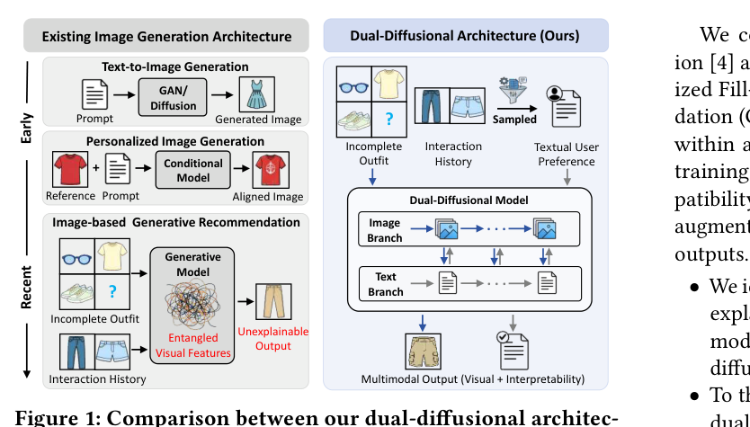
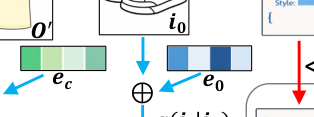
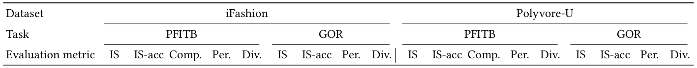
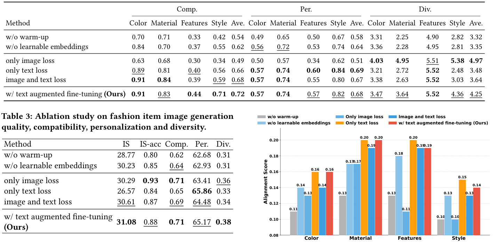
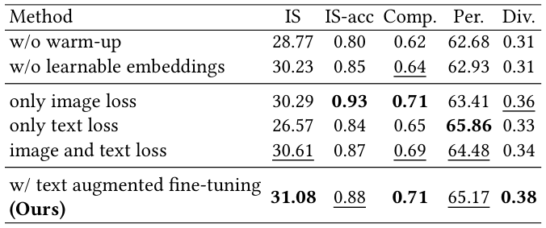

Dual-Diffusional Generative Fashion Recommendation (双扩散生成式时尚推荐)
- 会议/期刊: SIGIR 2026
- 推荐链路定位: 端到端生成式 (End-to-End Generative)
- 研究方向: 生成式推荐与离散语义ID / 多模态推荐与内容理解
- 论文原文: https://arxiv.org/abs/2605.17357v1
- 开源代码: https://github.com/LinkMingzhe/DualFashion
TL;DR (核心速览)
针对现有图像生成式时尚推荐"仅依赖隐式视觉嵌入导致行为建模不足、且只输出图像缺乏可解释性"两大痛点，本文提出 DualFashion——一个图像分支（连续流匹配扩散）+ 文本分支（离散掩码扩散）的双扩散 Transformer 架构，以属性级结构化 caption 与穿搭视觉上下文为联合条件，同时生成推荐单品图像与文本描述。在 iFashion 与 Polyvore-U 上，PFITB 与 GOR 两任务的兼容性、个性化、多样性指标均超越 DiFashion 等 SOTA，并提供显式语义解释。
Background & Motivation (背景与动机)
- 领域背景与主流范式: 时尚推荐正从"排序检索式"（从固定商品库召回）转向"生成式"（直接合成商品内容）。图像生成式推荐经历了 GAN（OutfitGAN、DVBPR）→ 扩散模型（DiFashion、FashionDPO）→ 多模态大模型（Pigeon）的演进，核心是把用户-物品交互视为偏好条件，生成用户可能感兴趣的单品图像。
- 现有方法局限 (Limitations of Prior Work):
- 行为建模不足：现有生成式方法（DiFashion、FashionDPO）以交互单品图像作为单模态输入，而用户-物品交互本身稀疏，视觉数据又含大量与偏好无关的冗余细节（如用户只因设计而交互、忽略颜色），难以可靠抽取偏好。
- 可解释性缺失：从 GAN 到扩散再到大模型，均把图像生成当作唯一输出，无法显式说明"为何该单品能补全穿搭并契合用户偏好"。
- 补丁式改造：已有解耦行为建模或文本辅助方案只是图像中心骨干上的附加模块，增加复杂度却未触及根因。
- 核心挑战 (Key Challenge): 作者论断——行为建模不足与可解释性缺失共享同一根因：图像中心的架构设计。因此简单拼接文本特征或加深网络无法解决，需要范式转向原生支持图文输入、并联合生成图文输出的多模态架构。
- 核心洞察与切入点 (Key Insight): 文本模态能抽象掉低层视觉噪声、编码高层语义意图（传统推荐早已利用），因此用文本分支承载"用户偏好"，用图像分支承载"穿搭匹配信息"，二者解耦又通过双扩散 Transformer 的跨模态注意力互相增强，输出端同时给出图像与属性级文本解释。
Problem Formulation & Method (问题定义与方法架构)
1. 符号定义与输入表征 (Notations & Input Representations)
- 用户信息 \(\boldsymbol{u}\)、物品信息 \(\boldsymbol{i}\)；完整穿搭 \(\boldsymbol{O}=\{\boldsymbol{i}_k\}_{k=1}^{n}\)，\(n\) 为穿搭单品数。
- PFITB (Personalized Fill-in-the-Blank)：给定不完整穿搭 \(\boldsymbol{O}'=\boldsymbol{O}\setminus\{\boldsymbol{i}_0\}\) 与用户交互历史，生成补全单品 \(\boldsymbol{i}_0\)。
- GOR (Generative Outfit Recommendation)：无 \(\boldsymbol{O}'\)，直接为用户生成完整穿搭 \(\boldsymbol{O}\)（\(n\) 件）。
- 图像潜变量 \(\boldsymbol{z}_0=E(\boldsymbol{i}_0)\in\mathbb{R}^{C\times H\times W}\)（Stable Diffusion 3 VAE 编码）；文本序列 \(\boldsymbol{y}_0=(y_0^{(1)},\dots,y_0^{(L)})\in\{1,\dots,V\}^L\)，\(V\) 为词表大小、\(L\) 为最大序列长度。
- 条件信号：用户偏好 \(\boldsymbol{p}\)、匹配条件 \(\boldsymbol{m}\)、任务定义 \(\boldsymbol{d}\)。
2. 整体流水线 (Overall Architecture)
数据流：时尚单品图像经 VLM 抽取属性级结构化 caption（Color / Material / Design features / Clothing Fashion Style 四类 key）→ 用户历史按属性做偏好加权采样得到 \(\boldsymbol{p}\) → 不完整穿搭经 VAE 编码 + 角色嵌入 + MLP 投影得到 \(\boldsymbol{m}\) → 模板句经 T5 编码得到 \(\boldsymbol{d}\) → 双扩散 Transformer 的图像分支与文本分支在每层注意力交互 → 输出推荐单品图像与结构化文本描述。
flowchart TD
A["输入层: 用户交互历史图像 / 不完整穿搭 O' / 任务模板句"] --> B["条件构造: 属性级Caption抽取 + 偏好加权采样 p; VAE+角色嵌入+MLP 得 m; T5 编码得 d"]
B --> C["双扩散 Transformer: 图像分支(连续流匹配) + 文本分支(离散掩码扩散), 逐层跨模态注意力"]
C --> D["输出层: 推荐单品图像 + 属性级文本描述(可解释)"]图 1 对比了本文双扩散架构与既有图像生成架构（Text-to-Image、Personalized Image Generation、Image-based Generative Rec）的差异：既有方法输出单一图像且视觉特征纠缠、不可解释，而 DualFashion 以多模态输入驱动多模态输出。

3. 核心模块设计与数学原理 (Key Designs & Formulations)
(1) 图像分支——连续流匹配扩散 (Continuous Flow-Matching Diffusion)
前向过程 \(\boldsymbol{z}_t=\alpha(t)\boldsymbol{z}_0+\sigma(t)\boldsymbol{\epsilon},\ t\in[0,1],\ \boldsymbol{\epsilon}\sim\mathcal{N}(0,\mathbf{I})\)，其中 \(\alpha(0)=1,\sigma(0)=0,\sigma(1)\approx1\)。基于确定性概率流 ODE 定义最优速度场 \(\mathrm{d}\boldsymbol{z}_t/\mathrm{d}t=\mathrm{v}(\boldsymbol{z}_t,t)=\dot{\alpha}(t)\boldsymbol{z}_0+\dot{\sigma}(t)\boldsymbol{\epsilon}\)，用神经网络 \(\mathrm{v}_\theta(\boldsymbol{z}_t,t,\boldsymbol{c})\) 参数化，条件 \(\boldsymbol{c}=\{\boldsymbol{p},\boldsymbol{m},\boldsymbol{d}\}\)。物理直觉：以速度场回归替代噪声预测，训练更稳定、采样步数更少。
(2) 文本分支——离散掩码扩散 (Discrete Masked Diffusion)
在离散状态空间 \(\mathcal{S}=\{1,\dots,V\}\cup\{\texttt{<extra\_id0>}\}\) 上构建连续时间马尔可夫链，\(t\) 增大时各位置以递增概率被 mask，\(t=1\) 时全序列被 mask。掩码语言建模目标： $\(\mathcal{L}_{\text{text}}=\mathbb{E}\Big[-\frac{1}{K}\sum_{i=1}^{K}\log\big[\boldsymbol{y}_\theta(\boldsymbol{y}_{t_i},\boldsymbol{c})\cdot\boldsymbol{y}_0\big]/t_i\Big],\)$ \(K\) 为 antithetic sampling 的均匀时间步数，用于降低损失估计方差。
(3) 角色嵌入与均值偏移 (Role Embeddings)
目标单品 \(\boldsymbol{i}_0\) 与穿搭上下文 \(\boldsymbol{O}'\) 共享同一 VAE 编码器，潜空间统计相近、难以区分。作者引入可学习角色嵌入 \(\boldsymbol{e}_0,\boldsymbol{e}_c\in\mathbb{R}^{C\times1\times1}\)： $\(\tilde{\boldsymbol{z}}_0=\boldsymbol{z}_0+\boldsymbol{e}_0,\quad \tilde{\boldsymbol{z}}_c=\frac{1}{n}\sum_{k=1}^{n}\boldsymbol{z}_c^{(k)}+\boldsymbol{e}_c,\)$ 即使 \(\boldsymbol{\mu}_0\approx\boldsymbol{\mu}_c\)，均值差 \(\Delta\boldsymbol{\mu}=(\boldsymbol{\mu}_0-\boldsymbol{\mu}_c)+(\boldsymbol{e}_0-\boldsymbol{e}_c)\approx(\boldsymbol{e}_0-\boldsymbol{e}_c)\neq0\)，使角色线性可分。这是本文一个精巧的表示解耦设计。
(4) 偏好加权采样 (Preference Weighted Sampling)
对每个属性 \(a\in A\)，元素 \(v\) 的采样概率 \(P(v)=\exp(f(v)/T)\big/\sum_{v'\in V_a}\exp(f(v')/T)\)，\(f(v)\) 为历史频次，温度 \(T<1\) 偏向利用已知偏好、\(T>1\) 偏向探索。每属性独立采样 \(N=10\) 次去重得到 \(\boldsymbol{p}\)。相比硬阈值，可避免稀疏偏好被丢弃。
(5) 条件注入与联合损失
文本分支输入拼接 \([\boldsymbol{y}_t;\boldsymbol{p};\boldsymbol{d}]\)，在每层注意力中 attend 图像分支的 \(\boldsymbol{m}\)；图像分支以固定混合权重 \(\lambda_m\) 注入匹配条件 \(\boldsymbol{z}'_t=(1-\lambda_m)\boldsymbol{z}_t+\lambda_m\boldsymbol{m}\)，并以 \([\boldsymbol{p},\boldsymbol{d}]\) 为文本条件。两分支联合优化使图文互相增强。
4. 训练目标、负采样与推理复杂度 (Optimization, Negative Sampling & Complexity)
- 损失函数: 总目标 \(\mathcal{L}=\mathcal{L}_{\text{img}}+\lambda_{\text{text}}\mathcal{L}_{\text{text}}\)（式 11），\(\lambda_{\text{text}}\) 为超参。Stage 2 中文本损失为 \(\mathcal{L}'_{\text{text}}=-\sum_j m_j\log p_\theta(\boldsymbol{y}_{0,j}|\boldsymbol{y}_t,\boldsymbol{p},\boldsymbol{m},\boldsymbol{d})\)，图像损失为流匹配重建 \(\mathcal{L}'_{\text{img}}=\mathbb{E}\|\mathrm{v}_\theta(\boldsymbol{z}'_t,t,\boldsymbol{p},\boldsymbol{d})-(\boldsymbol{\epsilon}-\boldsymbol{z}_0)\|_2^2\)。
- 训练负采样策略: 本文为生成式范式，无传统负采样（不涉及 BPR/InfoNCE）。文本分支采用掩码扩散（随机 mask 值 token），图像分支采用随机时间步加噪，属"免负采样"的自监督扩散训练。
- 三阶段训练（图 2）：Stage 1 Warm-up 用时尚图文对做跨模态对齐，并只对 value token 加 mask、保留 key，强制模型学习结构化属性依赖；Stage 2 匹配感知个性化多模态训练，注入 \(\boldsymbol{p},\boldsymbol{m},\boldsymbol{d}\)；Stage 3 文本增强微调，用满足匹配与个性化要求的增强 caption 提升多样性并实现跨模态知识迁移，且不引入重计算开销。
- 复杂度: 原文未报告具体训练/推理耗时、显存与采样步数；推理需扩散采样（图像分支多步去噪 + 文本分支迭代去掩码），属生成式端到端，不支持 ANN 检索。作者声称 text-augmented fine-tuning "without incurring heavy computational costs"，但未给出量化对比。

Experimental Setup & Evaluation Protocol (实验设置与评估协议)
- 数据集统计与预处理: 原文使用 iFashion 与 Polyvore-U 两个时尚数据集，并对全部单品用视觉语言模型抽取四类属性级结构化 caption。原文正文未给出 #Users / #Items / #Interactions 的具体统计表，故下表仅列数据集名称，数值标注"原文未报告"。
| 数据集 (Dataset) | 用户数 (#Users) | 物品数 (#Items) | 交互数 (#Interactions) | 稀疏度/密度 (Sparsity) | 模态/辅助特征说明 |
|---|---|---|---|---|---|
| iFashion | 原文未报告 | 原文未报告 | 原文未报告 | 原文未报告 | 图像 + VLM 抽取的四属性结构化 caption |
| Polyvore-U | 原文未报告 | 原文未报告 | 原文未报告 | 原文未报告 | 图像 + 结构化 caption |
- 数据划分方式 (Splitting Strategy): 原文正文未明确说明 PFITB/GOR 的训练/测试划分细节（如是否按用户留出穿搭），存在需在附录确认的空白；从任务定义看属"穿搭补全/生成"设定，非传统 LOO 或比例切分。
- 排名评测协议 (Ranking Protocol): 本文为生成式任务，非检索排序，不适用 Full-Ranking / Sampled Ranking。评估围绕生成质量：兼容性 (Compatibility)、个性化 (Personalization)、多样性 (Diversity) 三类指标（表 1 列名 "Comp./Per./Div."），具体指标定义原文正文未逐一展开。
- 评价指标与显著性检验: 表 1 报告 Comp./Per./Div. 三组指标，粗体为最优、下划线为次优。原文未报告配对显著性检验（t-test/Wilcoxon）与多随机种子方差。
Key Experimental Results (核心实验结果)
1. 主实验对比 (Main Results)
表 1 在 iFashion 与 Polyvore-U 上对比本文与多类基线（含 GAN 类、扩散类 DiFashion、FashionDPO、多模态 Pigeon 等），覆盖 PFITB 与 GOR 两任务，指标为兼容性/个性化/多样性。由于提供的正文片段未包含表 1 的具体数值单元格，以下仅给出结构性结论，具体数字需以原文表 1 为准，避免臆造。
| 数据集 | 指标 | 传统/生成基线 | 最强基线 (如 DiFashion/FashionDPO) | 本文方法 (Ours) | 相对提升 (Improv.) |
|---|---|---|---|---|---|
| iFashion (PFITB) | Comp./Per./Div. | 原文表 1 | 原文表 1（下划线） | 最优（粗体） | 原文未在正文给出百分比 |
| iFashion (GOR) | Comp./Per./Div. | 原文表 1 | 原文表 1（下划线） | 最优（粗体） | 原文未在正文给出百分比 |
| Polyvore-U (PFITB) | Comp./Per./Div. | 原文表 1 | 原文表 1（下划线） | 最优（粗体） | 原文未在正文给出百分比 |
| Polyvore-U (GOR) | Comp./Per./Div. | 原文表 1 | 原文表 1（下划线） | 最优（粗体） | 原文未在正文给出百分比 |

2. 消融实验与控制变量分析 (Ablation Study)
表 2 针对时尚单品文本生成做消融，考察 warm-up、可学习嵌入 (learnable embeddings)、损失设计、text-augmented fine-tuning 四项的影响；表 3 针对图像生成质量/兼容性/个性化/多样性做消融。图 3 进一步分析图像与文本生成之间的对齐关系。正文片段未给出各消融行的具体数值，故此处仅指出消融维度与结论方向（各模块均有正向贡献，text-augmented fine-tuning 提升多样性），具体降幅需查原文表格。消融是否严格控制参数量对齐，原文正文未说明。


3. 稀疏度/冷启动分桶与超参敏感度 (Sparsity Buckets & Hyperparameters)
- 长尾/冷启动分桶: 原文正文未报告按交互频次分桶的冷启动或长尾分析。
- 关键超参数敏感度: 偏好采样温度 \(T\)（\(T<1\) 利用、\(T>1\) 探索）、采样次数 \(N=10\)、文本损失权重 \(\lambda_{\text{text}}\)、图像条件混合权重 \(\lambda_m\) 为关键超参；正文未给出系统的敏感度曲线。
- 线上 A/B 测试: 原文仅包含离线实验，无线上 A/B 测试。
Highlights, Limitations & Critiques (亮点、局限与审稿级批判)
- 核心亮点与可迁移性:
- 双扩散解耦范式：文本分支承载高层语义偏好、图像分支承载视觉匹配，逐层跨模态注意力互相增强，可迁移到家居、美妆等图文并存的生成式推荐场景。
- 角色嵌入的均值偏移分析（式 14）为"同源潜空间难以区分角色"提供了简洁可解释的解法，具普适性。
- 偏好加权采样用温度控制的 soft 采样替代硬阈值，优雅处理稀疏偏好，可迁移到任何属性级用户画像构建。
- 文本增强微调在不增重计算的前提下提升多样性并实现跨模态知识迁移，工程友好。
- 局限性与审稿视角批判:
- 评估协议透明度不足：正文未给出数据集统计量、划分细节与指标定义，复现与公平比较存疑；缺乏显著性检验与多随机种子方差。
- 生成式评估的客观性：Comp./Per./Div. 多依赖预训练模型打分，存在评估器偏置，缺少人工评测细节（正文片段未见）。
- 效率论证薄弱：声称"低成本"但未报告训练/推理延迟、采样步数与显存，扩散多步采样在工业实时场景的可行性未验证。
- 可解释性未量化：文本输出作为解释，但未评估解释的忠实度/有用性（如人工或自动 faithfulness 指标）。
- 基线公平性：与 DiFashion/FashionDPO 等对比时是否参数量对齐、是否共享同等预训练骨干，正文未充分说明。
Rating (四维评分)
- 方法创新性 (Novelty): ⭐⭐⭐⭐
- 评估协议与实验扎实度 (Protocol & Experiments): ⭐⭐⭐
- 写作与数学规范度 (Clarity & Rigor): ⭐⭐⭐⭐
- 工业落地与复现价值 (Industrial & Practical Value): ⭐⭐⭐